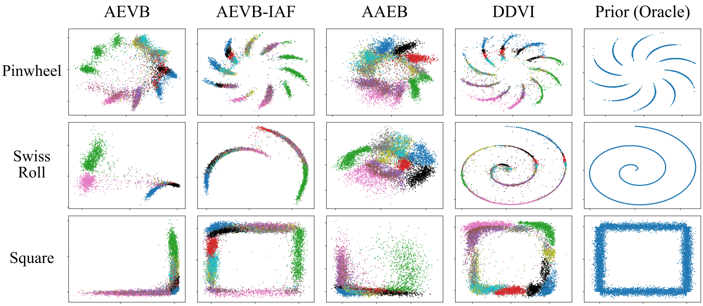
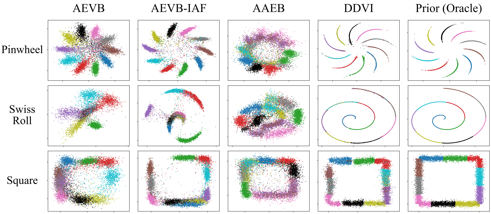
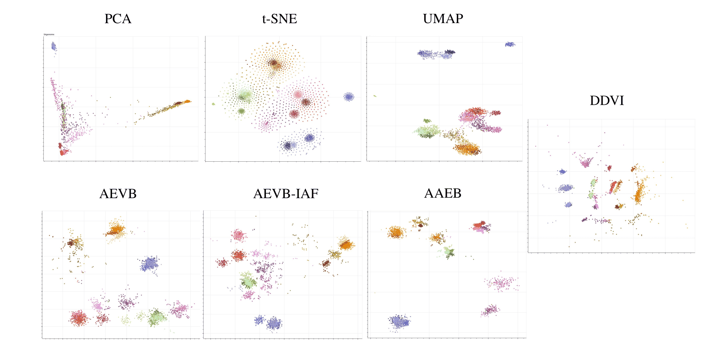
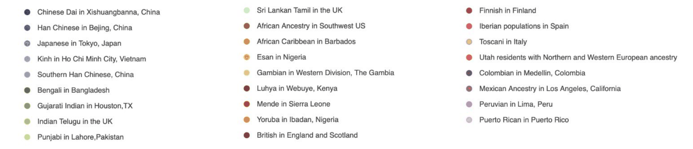

We propose denoising diffusion variational inference (DDVI), a black-box variational inference algorithm for latent variable models which relies on diffusion models as flexible approximate posteriors. Specifically, our method introduces an expressive class of diffusion-based variational posteriors that perform iterative refinement in latent space; we train these posteriors with a novel regularized evidence lower bound (ELBO) on the marginal likelihood inspired by the wake-sleep algorithm. Our method is easy to implement (it fits a regularized extension of the ELBO), is compatible with black-box variational inference, and generally outperforms alternative classes of approximate posteriors based on normalizing flows or adversarial networks. We find that DDVI improves inference and learning in deep latent variable models across common benchmarks as well as on a motivating task in biology—inferring latent ancestry from human genomes—where it outperforms strong baselines on the 1000 Genomes dataset.
DDVI targets amortized black-box variational inference in a latent variable model \(p_\theta(x,z) = p_\theta(x\mid z)\,p_\theta(z)\) that admits efficient sampling, such as a variational autoencoder, a Bayesian network, or a model written in a probabilistic programming language. The marginal likelihood is approximated with an evidence lower bound that depends on an approximate posterior \(q_\phi(z\mid x)\):
\[ \begin{aligned} \log p_\theta(x) &\;\ge\; \max_\phi\; \mathbb{E}_{q_\phi(z\mid x)}\big[\log p_\theta(x,z) - \log q_\phi(z\mid x)\big] \\ &\;=:\; \max_\phi\; \mathrm{ELBO}(x,\theta,\phi). \end{aligned} \]The gap \(\log p_\theta(x) - \max_\phi \mathrm{ELBO}(x,\theta,\phi)\) equals \(\min_\phi \mathrm{KL}\big(q_\phi(z\mid x)\,\|\,p_\theta(z\mid x)\big)\), so a more expressive posterior family gives a tighter bound and a better learning signal for \(p_\theta\). Normalizing flows need an invertible architecture for every layer, which constrains their expressivity and requires backpropagating through a potentially very deep network. Adversarial posteriors need only samples from the prior, but they are trained adversarially and do not give explicit likelihoods.
DDVI instead uses diffusion in latent space to parameterize \(q_\phi(z\mid x)\). A sample starts from a Gaussian and is refined step by step into a distribution that can be multi-modal and complex. The posterior is trained with a denoising objective, with no adversarial training and no invertible architecture; as \(T \to \infty\) it effectively becomes a continuous-time normalizing flow. Unlike diffusion samplers for unnormalized densities, DDVI uses the factorization \(p_\theta(x\mid z)\,p_\theta(z)\) and efficient sampling from \(p_\theta\). This gives a simpler algorithm that does not rely solely on backpropagating through a sampling process, and that is fast enough to learn the model as well as perform inference.
| Model | Training objective | Approximating family | Sample-based prior | Auxiliary variable | Tasks |
|---|---|---|---|---|---|
| AEVB | ELBO | Diagonal Gaussian | ✗ | ✗ | Density estimation |
| AEVB-IAF | ELBO | Normalizing flow | ✗ | ✓ | Density estimation / Visualization |
| AAEB | Adversarial training | Adversarial generator | ✓ | ✗ | Visualization |
| H-AEVB | ELBO | Factorial Normal / Normalizing flow | ✗ | ✓ | Density estimation / High-quality sample generation |
| ADGM | ELBO | Non-Gaussian | ✗ | ✓ | Density estimation |
| LDM | ELBO | Diagonal Gaussian | ✗ | ✓ | High-quality sample generation |
| LSGM | ELBO & score matching | Diagonal Gaussian | ✗ | ✓ | High-quality sample generation |
| DDVI | Wake ELBO + sleep term | Denoising diffusion | ✓ | ✓ | Density estimation / Visualization |
Comparison of DDVI with related methods (Table 4 of the paper; the graphical-illustration column is omitted). Latent diffusion models such as LDM and LSGM put hierarchical Gaussian latents into the generative model \(p\) to improve sample quality. DDVI has a different goal: fitting a \(p\) with structured latents, where the user encodes prior knowledge in \(p(z)\), by adding auxiliary latents to the posterior \(q\).
In short. DDVI has two components: a class of approximate posteriors \(q(z\mid x)\) parameterized by diffusion, and a lower bound on the marginal likelihood inspired by wake-sleep. It is especially suited to probabilistic programming, representation learning and dimensionality reduction.
DDVI combines a modeling family of approximate posteriors based on diffusion, a learning objective formed by a regularized ELBO, and an optimization algorithm inspired by wake-sleep.
The posterior contains auxiliary latents \(y = (y_1, \dots, y_T)\), progressively simplified versions of \(z\), with \(y_T\) following a simple (e.g., Gaussian) distribution. Sampling draws \(y_T\) and then runs the denoising model, which refines \(y_T\) into \(z\):
\[ \begin{gathered} q_\phi(z\mid x) = \int_y q_\phi(z\mid y, x)\, q_\phi(y\mid x)\, dy, \\ q_\phi(y, z\mid x) = q_\phi(y_T\mid x)\, q_\phi(z\mid y_1, x) \textstyle\prod_{t=1}^{T-1} q_\phi(y_t\mid y_{t+1}, x). \end{gathered} \]A forward diffusion process \(r(y\mid z, x) = r(y_1\mid z, x)\prod_{t=1}^{T-1} r(y_{t+1}\mid y_t, x)\), for example Gaussian diffusion or a discrete noising process, turns \(z\) into \(y_T\), whose posterior is easier to model. \(q_\phi\) is trained to approximately reverse it.
Applying the ELBO over \(z\) and then over the posterior's own latent \(y\) gives a Markovian ELBO; optimizing it alone is unregularized DDVI. Its prior term samples from the reverse process \(q\) to match the forward process \(r\), the opposite of diffusion training. This on-policy learning requires backpropagating through \(T\) samples, and it optimizes a mode-seeking divergence that may struggle to fit a complex \(p(z)\). DDVI therefore adds a regularizer that resembles the sleep phase of wake-sleep:
\[ \begin{aligned} \log p_\theta(x) \;\ge\; & \underbrace{\mathbb{E}_{q_\phi(y,z\mid x)}\big[\log p_\theta(x\mid z)\big]}_{\text{wake / reconstruction term } \mathcal{L}_{\mathrm{rec}}} \\ & \underbrace{-\,\mathrm{KL}\big(q_\phi(y,z\mid x)\,\|\,r(y\mid x,z)\,p(z)\big)}_{\text{prior regularization term } \mathcal{L}_{\mathrm{reg}}} \\ & \underbrace{-\,\mathbb{E}_{p_\theta(x)}\big[\mathrm{KL}\big(p_\theta(z\mid x)\,\|\,q_\phi(z\mid x)\big)\big]}_{\text{sleep term } \mathcal{L}_{\mathrm{sleep}}}. \end{aligned} \]The sleep term is optimized over \(\phi\) only, with \(x\) sampled from \(p_\theta\). It involves the intractable \(p_\theta(z\mid x)\), so DDVI replaces it with a lower bound, the denoising diffusion loss, obtained by using \(r\) as the variational posterior over \(y\):
\[ \begin{aligned} \mathcal{L}_{\mathrm{sleep}}(\phi) &\;\ge\; \mathcal{L}_{\mathrm{diff}}(\phi) \\ &\;=\; \mathbb{E}_{p_\theta(x,z)}\Big[\mathbb{E}_{r}\Big[\log \frac{q_\phi(y,z\mid x)}{r(y\mid z,x)}\Big]\Big] + \bar H(p_\theta), \end{aligned} \]where \(\bar H(p_\theta)\) does not depend on \(\phi\). By the Markov structure of \(r\) and \(q\), \(\mathcal{L}_{\mathrm{diff}}\) has the same form as the ELBO of a diffusion model. With Gaussian diffusion, \(r(y_t\mid y_{t-1}) = \mathcal{N}\big(y_t;\, \sqrt{\alpha_t}\, y_{t-1},\, (1-\alpha_t) I\big)\), its sum of KL divergences can be approximated by the familiar noise-prediction loss
\[ \mathbb{E}_{t,\, \epsilon \sim \mathcal{N}(0, I)}\, \big\| \epsilon - \epsilon_\phi\big(\sqrt{\bar\alpha_t}\, y_0 + \sqrt{1-\bar\alpha_t}\, \epsilon,\ x,\ t\big) \big\|^2, \]with \(y_0 := z\) and \(\bar\alpha_t = \prod_{s\le t} \alpha_s\). The full objective is \(\mathcal{L}_{\mathrm{ddvi}} = \mathcal{L}_{\mathrm{rec}} + \mathcal{L}_{\mathrm{reg}} + \mathcal{L}_{\mathrm{diff}}\), where \(\mathcal{L}_{\mathrm{reg}}\) and \(\mathcal{L}_{\mathrm{diff}}\) may be weighted by \(\beta_{\mathrm{reg}}, \beta_{\mathrm{diff}} > 0\) as in a \(\beta\)-VAE. Since \(\mathcal{L}_{\mathrm{diff}} \le \mathcal{L}_{\mathrm{sleep}} \le 0\), for \(\beta_{\mathrm{reg}} \ge 1\) it is a valid lower bound on \(\log p_\theta(x)\), tight when \(\beta_{\mathrm{reg}} = 1\) and \(q_\phi(y, z\mid x') = r(y\mid z, x')\, p_\theta(z\mid x')\) for all \(x'\).
Wake step. Sample \(x\) from the data and take a gradient step on \(\theta, \phi\) for \(\mathcal{L}_{\mathrm{rec}} + \mathcal{L}_{\mathrm{reg}}\), the ELBO. This fits \(q_\phi(z\mid x)\) to \(p_\theta(z\mid x)\) through the reverse KL divergence.
Sleep step. Sample \(z, x\) from \(p_\theta\) and take a gradient step on \(\phi\) for \(\mathcal{L}_{\mathrm{diff}}\), a diffusion-style denoising loss. This fits \(q_\phi(z\mid x)\) to \(p_\theta(z\mid x)\) through the forward KL divergence.
When \(q_\phi\) equals \(p_\theta(z\mid x)\) and reverses \(r\), the bound \(\mathcal{L}_{\mathrm{ddvi}}\) is tight. In the simplified variant, \(r(y\mid z)\) and \(q_\phi(z\mid y)\) do not depend on \(x\): the sleep term then needs only samples from \(p(z)\) (wake-sleep in latent space), and the whole loss is optimized end-to-end with no separate sleep phase, at the price of a bound that may no longer be tight. In practice we use linear noise schedules, deterministic DDIM sampling to produce the latents, and a Huber loss in the simplified algorithm.
DDVI pseudocode (Algorithm 1 in the paper)
(optional) pre-train p_θ(x|z) and q_φ(y|x) with DDVI, using an unconditional diffusion model q_φ(z|y)
for epoch = 1, …, n:
for x_1, …, x_k ~ p_D(x):
y_i ~ q_φ(y|x_i), z_i ~ q_φ(z|y_i, x_i) # i = 1, …, k
optimize θ, φ on a Monte Carlo estimate of # standard ELBO training (wake)
E_q[log p_θ(x_i|z)] − KL(q_φ(y,z|x_i) ‖ p_θ(y,z))
repeat m times: # sleep
z_i ~ p(z) # batch-sample latents from the prior
x̂_i ~ p_θ(x|z_i) # construct fantasy inputs
y_i ~ r(y|z_i) # noise the latents with the forward process
optimize φ with the diffusion noise-prediction loss on q_φ(z|y_i, x̂_i)Semi-supervised learning. Some data points have labels \(l\), with the model \(p_\theta(x\mid z, l)\, r(y\mid z, l)\, p_\theta(z\mid l)\, p(l)\). An unobserved label is treated as a latent variable, and a classification term \(\alpha\, \mathbb{E}\big[\log q_\phi(l\mid x)\big]\) trains \(q_\phi(l\mid x)\) so that it can serve as a classifier.
Clustering. Either make \(p_\theta(z)\) a mixture of priors whose means are learned and from which cluster membership is deduced, with no change to the objective of \(q_\phi\); or add a one-hot cluster variable \(c\) with \(p(c) = \mathrm{Cat}(\pi)\) to the model.
We compare DDVI with AEVB (Gaussian posterior), AEVB-IAF (inverse autoregressive flow posterior) and AAEB (adversarial autoencoder) on MNIST and CIFAR-10, in unsupervised and semi-supervised settings, and on the 1000 Genomes dataset. The unsupervised setting also includes H-AEVB (hierarchical posterior) and PIS (path integral sampler). All latents are 2-dimensional; on MNIST and CIFAR-10 the prior \(p(z)\) is one of three structured distributions: pinwheel, Swiss roll or square. Values are means with 95% confidence intervals over 3 seeds (10 for semi-supervised MNIST).
Metrics. The ELBO (nats per image) and the MMD between generated and test images evaluate the learned generative model. Latent NLL directly evaluates the expressivity of the posterior: it fits a kernel density estimator to the latents of the test data and reports the negative log-likelihood of prior samples under it. Acc is the accuracy of a 20-nearest-neighbor classifier on the latents.

| MNIST | Pinwheel | Swiss roll | Square | ||||||
|---|---|---|---|---|---|---|---|---|---|
| ELBO ↑ | MMD ↓ | Latent NLL ↓ | ELBO ↑ | MMD ↓ | Latent NLL ↓ | ELBO ↑ | MMD ↓ | Latent NLL ↓ | |
| AEVB | −169.9±1.9 | 0.73±0.06 | 1.55±0.59 | −174.6±2.8 | 0.74±0.15 | 5.63±1.72 | −172.4±1.2 | 1.00±0.27 | 2.93±1.11 |
| AEVB-IAF | −159.7±5.1 | 0.76±0.06 | 1.29±0.40 | −170.7±17.9 | 0.76±0.21 | 3.70±1.97 | −160.2±6.7 | 0.77±0.16 | 1.72±0.10 |
| AAEB | N/A | 0.68±0.02 | 1.54±0.13 | N/A | 0.54±0.04 | 3.34±0.24 | N/A | 0.85±0.18 | 2.27±0.87 |
| H-AEVB | −154.6±4.0 | 0.73±0.07 | 1.54±0.11 | −158.2±6.0 | 0.64±0.05 | 2.92±0.45 | −155.8±7.1 | 0.75±0.12 | 1.67±0.04 |
| PIS† | −192.6±8.2 | 1.15±0.04 | 2.13±0.65 | −216.6±0.2 | 1.09±0.02 | 6.19±0.13 | −204.6±0.4 | 1.49±0.04 | 3.68±0.07 |
| DDVI | −151.5±2.7 | 0.70±0.08 | 1.11±0.10 | −155.9±1.5 | 0.69±0.05 | 2.27±0.16 | −146.6±2.4 | 0.64±0.03 | 1.56±0.01 |
Unsupervised learning on MNIST (Table 1 of the paper; 3 seeds). Bold marks the best result, as in the paper. The configuration of DDVI was selected on a validation split. AAEB's adversarial posterior has no explicit likelihood, so it has no ELBO. †Our reimplementation of PIS as an amortized posterior.
| CIFAR-10 | Pinwheel | Swiss roll | Square | |||
|---|---|---|---|---|---|---|
| ELBO ↑ | Latent NLL ↓ | ELBO ↑ | Latent NLL ↓ | ELBO ↑ | Latent NLL ↓ | |
| AEVB | −1608.1±40.9 | 2.32±0.17 | −1522.1±68.2 | 6.79±0.66 | −1578.3±23.0 | 2.53±2.07 |
| AEVB-IAF | −1491.2±29.3 | 1.81±1.13 | −1464.7±35.6 | 5.24±1.54 | −1475.8±37.9 | 1.54±0.23 |
| AAEB | N/A | 1.40±0.21 | N/A | 2.86±0.12 | N/A | 1.80±0.32 |
| H-AEVB | −1401.8±13.9 | 1.46±0.02 | −1401.4±20.7 | 5.97±0.14 | −1403.6±24.6 | 1.60±0.05 |
| PIS† | −1686.6±15.7 | 1.88±0.02 | −1991.6±179.6 | 6.01±0.23 | −1865.2±101.9 | 2.72±1.59 |
| DDVI | −1453.2±24.9 | 0.97±0.07 | −1548.9±58.7 | 2.46±0.31 | −1363.1±27.2 | 1.50±0.06 |
Unsupervised learning on CIFAR-10 (Table 7 of the paper; 3 seeds). ELBO in nats per image with a Gaussian decoder whose variance is fit by maximum likelihood. MMD is not reported: with a 2-dimensional latent, CIFAR-10 samples are of very low quality for all methods. The configuration of DDVI was selected on a validation split with an earlier sigmoid decoder. †Our reimplementation.
About the ELBO values. The ELBO is reported in nats per image. As is common, MNIST uses the Bernoulli log-likelihood of grey-level pixels; \(\log p(z)\) is a clipped prior KDE; DDVI's \(\log q_\phi(z\mid x)\) assumes an injective DDIM map; and terms are conditional on dropout masks where dropout is active. The values are thus not guaranteed lower bounds on \(\log p_\theta(x)\). See the paper's appendix for the full evaluation protocol.
DDVI has the best ELBO and Latent NLL with all priors on MNIST. On CIFAR-10 it has the best Latent NLL with all priors and the best ELBO with square (H-AEVB is higher with the other two, as are AEVB and AEVB-IAF with Swiss roll). AAEB has the best MMD with pinwheel and Swiss roll.
The sleep step matters. Removing the sleep step from the second training stage of DDVI, with all other settings unchanged, gives a substantially worse Latent NLL:
| MNIST, Latent NLL ↓ | Pinwheel | Swiss roll | Square |
|---|---|---|---|
| DDVI | 1.11±0.10 | 2.27±0.16 | 1.56±0.01 |
| DDVI (w/o sleep step) | 3.29±0.92 | 6.99±4.67 | 2.39±0.62 |
From Table 9 of the paper (3 seeds), which also lists the baselines of Table 1.
Some labels are observed (1,000 for MNIST, 10,000 for CIFAR-10) and the partition of each prior into classes is known. DDVI achieves the best ELBO and Latent NLL with all priors on both datasets. It also has the best accuracy with all priors on CIFAR-10 and with Swiss roll on MNIST, ties AEVB-IAF with square, and is less accurate with pinwheel. In the latent visualizations, DDVI matches the prior almost perfectly.

| MNIST | Pinwheel | Swiss roll | Square | ||||||
|---|---|---|---|---|---|---|---|---|---|
| ELBO ↑ | Acc ↑ | Latent NLL ↓ | ELBO ↑ | Acc ↑ | Latent NLL ↓ | ELBO ↑ | Acc ↑ | Latent NLL ↓ | |
| AEVB | −180.7±0.5 | 0.85±0.02 | 1.59±0.03 | −200.0±2.0 | 0.49±0.02 | 5.37±0.22 | −191.2±2.5 | 0.58±0.04 | 2.34±0.21 |
| AEVB-IAF | −168.0±0.5 | 0.90±0.01 | 1.13±0.03 | −175.0±1.3 | 0.68±0.02 | 4.39±0.16 | −173.6±0.9 | 0.82±0.02 | 1.55±0.03 |
| AAEB‡ | N/A | 0.64±0.02 | 1.54±0.03 | N/A | 0.71±0.03 | 3.09±0.04 | N/A | 0.59±0.01 | 1.80±0.09 |
| DDVI | −161.9±0.2 | 0.85±0.01 | 1.10±0.01 | −165.8±0.3 | 0.82±0.01 | 2.10±0.01 | −161.7±0.3 | 0.82±0.01 | 1.51±0.01 |
Semi-supervised learning on MNIST with 1,000 labels (Table 2 of the paper; 10 seeds). All methods use KL and classification weights 0.01, batch size 128 and 50 epochs (‡except AAEB).
| CIFAR-10 | Pinwheel | Swiss roll | Square | ||||||
|---|---|---|---|---|---|---|---|---|---|
| ELBO ↑ | Acc ↑ | Latent NLL ↓ | ELBO ↑ | Acc ↑ | Latent NLL ↓ | ELBO ↑ | Acc ↑ | Latent NLL ↓ | |
| AEVB | −2113.7±44.4 | 0.30±0.07 | 2.24±0.18 | −2167.4±82.0 | 0.20±0.07 | 6.52±2.12 | −2125.1±19.1 | 0.30±0.05 | 1.94±0.28 |
| AEVB-IAF | −2090.1±29.9 | 0.48±0.02 | 1.60±0.08 | −2093.7±55.8 | 0.29±0.03 | 7.09±0.31 | −2118.9±21.3 | 0.35±0.01 | 1.57±0.04 |
| AAEB‡ | N/A | 0.26±0.01 | 1.70±0.03 | N/A | 0.25±0.03 | 3.17±0.19 | N/A | 0.24±0.02 | 1.67±0.28 |
| DDVI | −2053.1±14.9 | 0.53±0.02 | 1.07±0.01 | −2069.3±15.6 | 0.52±0.02 | 2.12±0.03 | −2065.4±19.3 | 0.50±0.01 | 1.50±0.02 |
Semi-supervised learning on CIFAR-10 with 10,000 labels (Table 8 of the paper; 3 seeds). All methods use KL and classification weights 0.5, batch size 128 and 50 epochs (‡except AAEB).
Diffusion vs. flows. Across the 12 benchmark settings (unsupervised and semi-supervised, MNIST and CIFAR-10, three priors), DDVI's diffusion posterior gives a higher ELBO than the flow-based posterior of AEVB-IAF in 11. Its forward-KL sleep loss also reduces mode collapse: all modes of the prior are covered well, as the Latent NLL shows.
On a real-world task, visualizing genotype data reveals patterns in the latent ancestry of individuals. We instantiate DDVI with a deep Gaussian latent variable model and compare it with AEVB, AEVB-IAF and AAEB on the 1000 Genomes dataset, alongside three dimensionality reduction algorithms: PCA, t-SNE and UMAP. For each method, 20 clusters are obtained by fitting a Gaussian mixture model to its latents, and compared with the population labels.


| 1000 Genomes | Cluster purity ↑ | Cluster completeness ↑ | NMI ↑ |
|---|---|---|---|
| AEVB | 0.28±0.02 | 0.78±0.16 | 0.59±0.08 |
| AEVB-IAF | 0.29±0.04 | 0.73±0.06 | 0.55±0.06 |
| AAEB | 0.37±0.06 | 0.76±0.11 | 0.63±0.02 |
| DDVI | 0.45±0.03 | 0.75±0.05 | 0.66±0.04 |
Genotype clustering (Table 3 of the paper). DDVI attains the best cluster purity and NMI. For cluster completeness, AEVB and AAEB have better means but much larger confidence intervals. There is an inherent trade-off between purity and completeness; NMI captures the overall clustering performance.
Computational cost. On the same task, after a short warm-up, DDVI with \(T \in \{5, 10\}\) diffusion steps outperforms the baselines at every later wall-clock budget, and keeps improving after the baselines have plateaued.
| NMI after | 10 min | 20 min | 30 min | 40 min | 50 min | 60 min |
|---|---|---|---|---|---|---|
| AEVB | 0.52 | 0.52 | 0.52 | 0.52 | 0.52 | 0.52 |
| AEVB-IAF | 0.54 | 0.52 | 0.52 | 0.52 | 0.52 | 0.52 |
| AAEB | 0.61 | 0.57 | 0.57 | 0.57 | 0.57 | 0.57 |
| DDVI (\(T=5\)) | warm-up | 0.63 | 0.63 | 0.66 | 0.66 | 0.66 |
| DDVI (\(T=10\)) | warm-up | 0.64 | 0.68 | 0.70 | 0.70 | 0.70 |
| DDVI (\(T=20\)) | warm-up | 0.50 | 0.51 | 0.56 | 0.64 | 0.68 |
| DDVI (\(T=50\)) | warm-up | 0.52 | 0.54 | 0.51 | 0.59 | 0.59 |
NMI on 1000 Genomes against wall-clock training time (Table 5 of the paper).
Scope. The paper focuses on dimensionality reduction and visualization; density estimation and sample generation are other possible uses. Because the learning objective adds a regularizer to the ELBO, we anticipate gains on models whose training benefits from regularization, but perhaps not on all models, and competitive likelihood estimation requires architecture improvements that are orthogonal to this work.
The repository contains the MNIST and CIFAR-10 experiments of the paper (unsupervised and semi-supervised learning with structured 2-D priors; Tables 1, 2, 7, 8 and 9) with the final settings, all baselines, ELBO evaluation, and one script per table.
git clone https://github.com/yingheng-wang/DDVI && cd DDVI
pip install -r requirements.txt
# simplified DDVI (x-independent reverse process); also the first training stage of DDVI
python train.py dataset=mnist model=ddvi_simplified prior=pinwheel seed=0
# DDVI with the x-conditional reverse process, initialized from the run above
python train.py dataset=mnist model=ddvi prior=pinwheel seed=0
# ELBO of the trained model
python evaluate_elbo.py runs/mnist/ddvi/pinwheel/seed0
bash scripts/table1_mnist.sh # Table 1: unsupervised MNIST, 3 seeds@inproceedings{piriyakulkij-wang:aaai25,
Author = {Piriyakulkij, Wasu Top and Wang, Yingheng and Kuleshov, Volodymyr},
Booktitle = {Proceedings of the AAAI Conference on Artificial Intelligence},
Title = {Denoising Diffusion Variational Inference: Diffusion Models as Expressive Variational Posteriors},
Year = {2025}}